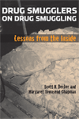

|
The Americanization of Social Science
Intellectuals and Public Responsibility in the Postwar United States
Haney, David Paul
A controversial explanation for sociology's isolation from American society
296 pp • 6x9 • Fall 2007
cloth 1-59213-713-X
EAN 978-1-59213-713-8
|
|
Black Communists Speak on Scottsboro
A Documentary History
edited by Howard, Walter T.
Surprising revelations about the role of black Communists in a notorious case of bigotry and injustice
208 pp • 5.5x8.25 • Fall 2007
cloth 1-59213-597-8
EAN 978-1-59213-597-4
|
|
Blue Skies
A History of Cable Television
Parsons, Patrick R.
The first comprehensive history of cable television in the United States
816 pp • 6x9 • Fall 2007
cloth 1-59213-287-1
EAN 978-1-59213-287-4 |
|
Campaign Advertising and American Democracy
Franz, Michael M., Paul B. Freedman, Kenneth M. Goldstein and Travis N. Ridout
Surprising findings about the positive effects of political advertising
216 pp • 6x9 • Fall 2007
paper 1-59213-456-4
EAN 978-1-59213-456-4
cloth 1-59213-455-6
EAN 978-1-59213-455-7 |
|
The Coolie Speaks
Chinese Indentured Laborers and African Slaves in Cuba
Yun, Lisa
A remarkable examination of bondage in Cuba that probes questions of slavery, freedom, and race
336 pp • 6x9 • Fall 2007
cloth 1-59213-581-1
EAN 978-1-59213-581-3
|
 |
Drug Smugglers on Drug Smuggling
Lessons from the Inside
Decker, Scott H. and Margaret Townsend Chapman
Convicted drug smugglers describe the business from the inside
224 pp • 6x9 • Fall 2007
paper 1-59213-643-5
EAN 978-1-59213-643-8
cloth 1-59213-642-7
EAN 978-1-59213-642-1
|

|
Economic Citizens
A Narrative of Asian American Visibility
So, Christine
In narratives dominated by money, exchange is the route to Asian American visibility
190 pp • 6x9 • Fall 2007
cloth 1-59213-584-6
EAN 978-1-59213-584-4
|
|
Equal Play
Title IX and Social Change
edited by Hogshead-Makar, Nancy, and Andrew Zimbalist
A reader of influential essays on the history and future of Title IX
328 pp • 7x10 • Fall 2007
paper 1-59213-380-0
EAN 978-1-59213-380-2
cloth 1-59213-379-7
EAN 978-1-59213-379-6 |
|
Forgotten Philadelphia
Lost Architecture of the Quaker City
Keels, Thomas H.
Lost treasures of Philadelphia architecture come to life again
320 pp • 10x8 • Fall 2007
cloth 1-59213-506-4
EAN 978-1-59213-506-6
|
|
Forklore
Recipes and Tales of an American Bistro
Yin, Ellen
True-life tales and scrumptious recipes from Philly's trendsetting restaurant
288 pp • 8x9 • Fall 2007
cloth 1-59213-651-6
EAN 978-1-59123-651-3 |

|
Forms in the Abyss
A Philosophical Bridge between Sartre and Derrida
Martinot, Steve
How the work of Derrida and Sartre can be bridged
New in Paperback!
320 pp • 6x9 • Fall 2007
paper 1-59213-440-8
EAN 978-1-59213-440-3
|
|
Life, Liberty, and the Mummers
Kennedy III, E. A.
A stunning photo-essay on America's most dazzling parade
192 pp • 8.5x11 • Fall 2007
cloth 1-59213-588-9
EAN 978-1-59213-588-2 |
|
Long Distance Love
A Passion for Football
Farred, Grant
A well-known scholar and lifelong soccer fan tells what the game has meant for him
224 pp • 5.5x8.25 • Fall 2007
paper 1-59213-374-6
EAN 978-1-59213-374-1
cloth 1-59213-373-8
EAN 978-1-59213-373-4 |
|
Managing the Infosphere
Governance, Technology, and Cultural Practice in Motion
McDowell, Stephen D., Philip E. Steinberg and Tami K. Tomasello
Comprehending the issues at stake in the networked world
248 pp • 5.5x8.25 • Fall 2007
paper 1-59213-280-4
EAN 978-1-59213-280-5
cloth 1-59213-279-0
EAN 978-1-59213-279-9 |
|
Musicians from a Different Shore
Asians and Asian Americans in Classical Music
Yoshihara, Mari
Why do so many Asians devote their lives to playing Western classical music?
288 pp • 6x9 • Fall 2007
cloth 1-59213-332-0
EAN 978-1-59123-332-1 |
|
One Last Read
The Collected Works of the World's Slowest Sportswriter
edited by Didinger, Ray
The very best writing from one of Philadelphia's finest sportswriters
384 pp • 6x9 • Fall 2007
cloth 1-59213-600-1
EAN 978-1-59213-600-1
|
|
The Redskins Encyclopedia
Richman, Michael, foreword by Dexter Manley
The definitive history of the Washington Redskins
432 pp • 8.315x10.875 • Fall 2007
cloth 1-59213-542-0
EAN 978-1-59213-542-4
|
|
Resentment's Virtue
Jean Améry and the Refusal to Forgive
Brudholm, Thomas, foreword by Jeffrie Murphy
Is forgiveness always the proper moral response to collective violence?
256 pp • 6x9 • Fall 2007
cloth 1-59213-566-8
EAN 978-1-59213-566-0
|
|
Savoring the Salt
The Legacy of Toni Cade Bambara
edited by Holmes, Linda Janet, and Cheryl A. Wall
An anthology that celebrates the life and work of a major African American writer
320 pp • 6x9 • Fall 2007
paper 1-59213-625-7
EAN 978-1-59213-625-4
cloth 1-59213-624-9
EAN 978-1-59213-624-7 |
|
She's Got a Gun
Floyd, Nancy
A fascinating, revealing look at women who own-and use-guns
256 pp • 7x10 • Fall 2007
paper 1-59213-155-7
EAN 978-1-59213-155-6
cloth 1-59213-154-9
EAN 978-1-59213-154-9 |
|
The Spike Lee Reader
edited by Massood, Paula J.
Looking at the films of the prolific, often controversial, and always provocative director
304 pp • 6x9 • Fall 2007
paper 1-59213-485-8
EAN 978-1-59213-485-4
cloth 1-59213-484-X
EAN 978-1-59213-484-7
|
|
The University Against Itself
The NYU Strike and the Future of the Academic Workplace
edited by Krause, Monika, Mary Nolan, Michael Palm and Andrew Ross
Looking at one historic student strike, this book offers lessons about the future of higher education
280 pp • 6x9 • Fall 2007
paper 1-59213-741-5
EAN 978-1-59213-741-1
cloth 1-59213-740-7
EAN 978-1-59213-740-4
|
Click here
to download the catalog (pdf). |